CAREER
2021 - Present
Ynov CAMPUS,
Aix-En-Provence
Currently on my bachelor degree, I am working towards a Master of Software Engineering (M.Eng.) degree. I'm invested into learning all the new things Ynov has to offer me.
Interested to continue in the software field, I will keep working to understand all specific features of this area.
Summer 2021 and summer 2022
Restaurant Le Swan,
Les Salins, Hyères
As a waitress, my main goal was to make client satisfied by getting them what they asked for in time. Making them happy, being friendly and showing them a smile are important things that we could not miss.
The job made me learn many abilities, work fast while being cautious of surroundings, agility, charisma, being meticulous ... many skills I will be able to use in other fields.
I also learned to be patient and comprehensive over mistakes, increasing my ability to work with a team.

2020 - 2021
Jean Moulin Lyon 3,
Lyon
Starting my studies in 2020 in a foreign languages and management double degree, I realised I wanted to work in the world of computer science.
This first year was a huge opportunity for me to comprehend the world of higher education and learn new way of work. I got to meet lot of people of both my age and older, and see that we can always choose and work in what we want if we have enough motivation.
They all inspired me to start doing what I feel like doing and get into computer science.
2020
High school Dumont D'Urville,
Toulon
I graduated high school with a European English section baccalaureate in economic and social sciences. Being a member of the European section allowed me to understand and study the world better while improving my english.

SKILLS
C#
Over the past year, I improved my experience of the language C# by making projects on my own, that includes games, exercises and small software apps. I plan to continue my learning and master this language.
Go
I've worked on many projects using this language this year. From mini games in the console to websites, I was able to experiment with it in many various ways.
Unity
Over the past years, I worked on making games using this engine. That includes 2D rpg games, fps, and much more. My learning of C# is helping me improve my skills in the use of this engine.
Unreal Engine 4
This year, I was able to work on a game development project using this engine. It was a great experience to understand the concept behind game production, and I am now working on personal projects using this engine.
Javascript/CSS/HTML
Having to make many website over the year, I have been able to master the use of these languages. Web has become an important resources over the past decades, learning how to use it is now a main skill for developers.
Python
I was able to improve my knowledge of this language by my class courses. Many small exercises allowed me to understand the way Python works, and I am now capable of making my own projects.
MySQL
Getting experience in the use of MySQL for backends has been a major point of my year. I was able to make a link with websites and backends using the GO logic.
PROJECTS
Game Overflow
Gaming questioning forum.
El pink calculator
A pink C# calculator app.
Clever and the Dappled Shadow
A RPG 3rd person game involving detectives and gangsters in the 50s.
FPS and RPG options for games
Many FPS/RPG features.
Cat In Space
A website using Twitch API to get information about the current streamers in the Twitch community.
Blue Voice
A small console game made with go.
Very Accurate Weather
A web site that displays the weather of many cities.
Build Me Paimon
A website about Genshin Impact that displays news and characters build.
Valolo
A Javascript/HTML/CSS "game" that takes place in the Valorant univers.
CONTACT